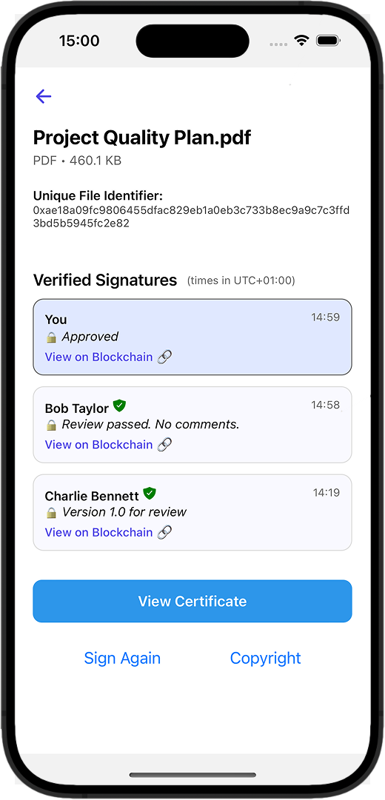

Why OpenSig?
- ✅ Fully private and secure with the latest cryptography
- ✅ No signups or accounts — just verify your email and your digital identity will be created
- ✅ Nothing gets uploaded — everything stays local
- ✅ No middlemen — sign directly with your personal digital identity
- ✅ Signatures are cryptographically verifiable, forever
- ✅ No hidden fees or crypto required
- ✅ Email-based wallet recovery by default, with other options coming
Use Cases
- üí° IP Protection: Timestamp your documents, designs, videos, or inventions to prove authorship.
- ✍️ E-Signatures: Sign contracts, proposals, or agreements with a verifiable digital signature.
- üßë‚Äçüíº Business Workflow: Digitally sign any file with confidence, no matter the format.
- üì¢ Notarize a public message: Declare something publicly; verifiable onchain forever.
How It Works
- Verify your email to create your digital identity (smart wallet)
- Sign, copyright and notarize privately — files are never uploaded
- Top up with Apple Pay, Google Pay, or your card
- Verify on-chain, forever
Screenshots



FAQ
Do I need to understand crypto? Nope. We handle the technical side and cover all blockchain fees. You just verify your email and sign away.
Where are the files stored? Nowhere. Files never leave your device.
What does "on-chain" mean? It means your signature is provably recorded forever on a public blockchain.